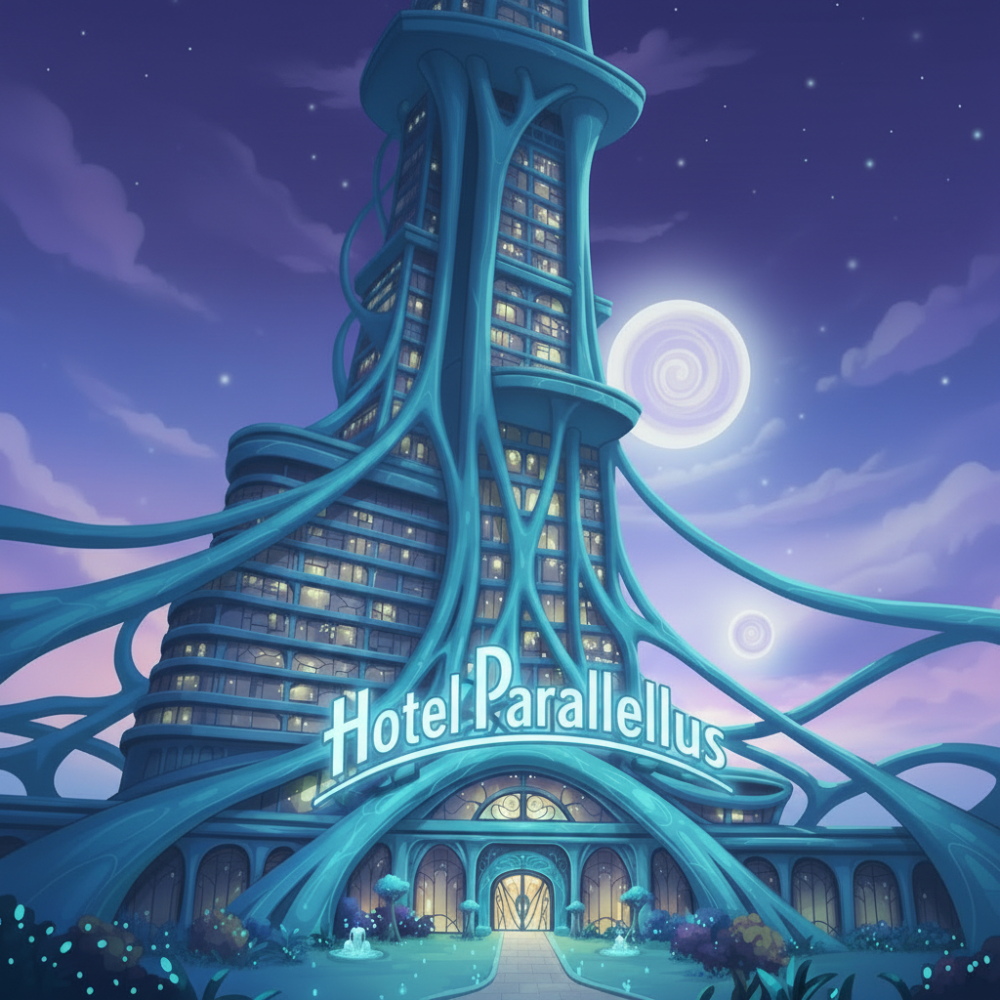
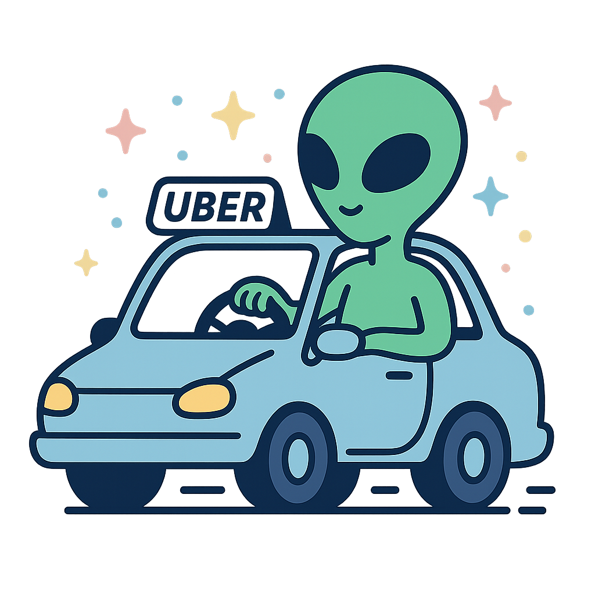
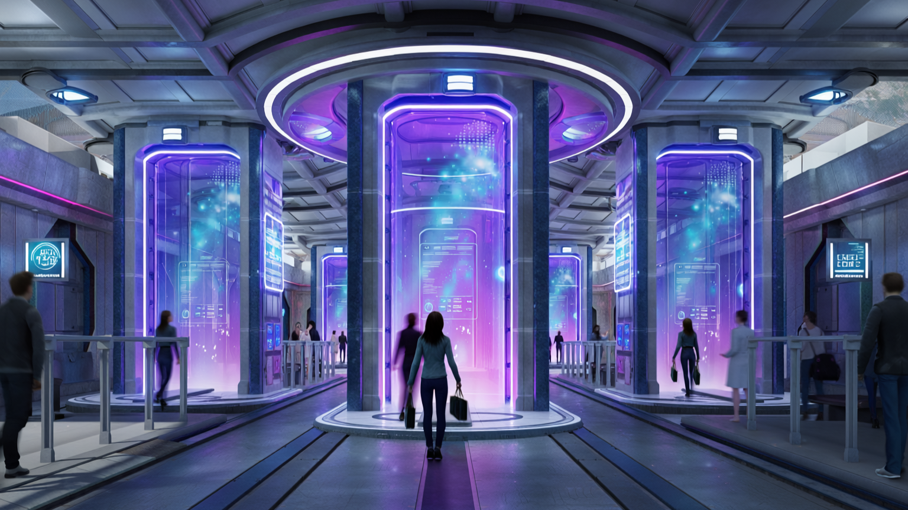

Det vigtigt at kende dine muligheder og hvad du måske kan opleve,
hvis du er endt i det forkerte univers
Se mere
Under "Nærkontakt" for at se dine muligheder
Udfyld en fomular –
Tryk på "Indberet" Så vi kan rette op på din
Nødsituation.
vi tager først betaling senere i processen, når du er tilbage i
dit rigtige liv!"
Har du nogensinde vågnet op og opdaget, at din hotelreceptionist
har tentakler, og at morgenmaden består af levende insekter?
Velkommen til Hotel Parallellus! Vi er det eneste hotel, der
forstår, at du måske ikke har de rigtige penge – endnu. Derfor
tilbyder vi: ✅ Overnatning i ethvert univers (vi har værelser i
dem alle) ✅ Betaling først, når du er hjemme (vi sender regningen
til din jordiske mail) ✅ Gratis teleportation til nærmeste
dimensionsportal (spørg i receptionen)
"Book nu – før du bliver fanget i et univers, hvor WiFi ikke
findes!"
Teaser
"Oh nej! Har din dobbeltgænger taget din plads?"
"Er du pludselig blevet arbejdsløs, single og udelukket fra din
egen Netflix-konto? Din dobbeltgænger har måske taget over!"
Hør mere om:Markus på (32), der pludselig blev
"erstatningsbar"
"Tjek. Hvis de lytter til noget værre end dit, så er det ikke
dig – det er en bedrager. Og husk: Hvis de er bedre til at
lave mad, så lad dem blive. Nogle kampe er ikke værd at kæmpe.
"Oh nej! Har din dobbeltgænger taget din plads?"
"Er du pludselig blevet arbejdsløs, single og udelukket fra din egen
Netflix-konto? Din dobbeltgænger har måske taget over!" Interview
med Markus (32), der pludselig blev "erstatningsbar" Journalist:
Markus, hvornår opdagede du, at din dobbeltgænger havde taget over?
Markus: Det startede med små ting. Det var en tirsdag. Folk begyndte
at sige, at de havde set mig steder, hvor jeg ikke havde været. Jeg
havde lige været på arbejde, da jeg ikke troede mine egne øjne. Jeg
troede først, det var stress, men så så jeg dem – min dobbeltgænger.
De stod på den anden side af gaden og smilte, men med en bedre
frisure. Og min kærestes arm omkring sig. Journalist: Er der sket
andre scenarier, som dette? Markus: Ja, dagen efter så jeg ham igen.
Jeg troede først, det var en dårlig joke, men så, så jeg ham
bestille min yndlingskaffe og flirte med min barista. Det var der,
jeg tænkte: "Okay, nu er det krig." Journalist: Hvordan føltes det?
Markus: Som at være den dårlige kopi af sig selv. Pludselig var jeg
den, der skulle forklare, hvorfor jeg ikke havde bestilt bor på den
mega dyre restaurant, som hun altid havde ønsket at spise på – som
min dobbeltgænger havde aflyst. Og så havde de ændret min
Netflix-profilbillede til et selfie, hvor de så meget gladere ud end
mig. Journalist: Hvad gjorde du? Markus: Jeg downloadede
Dobbeltgænger-Detektiv™. De fandt ud af, at min dobbeltgænger havde
taget min plads i køen hos bageren, min plads i fitnesscenteret, og
ja – de havde endda taget mit sidste stykke pizza. Men heldigvis fik
jeg en gratis personlighedscheck. Vist nok, at jeg er mere original
end dem. Journalist: Har du en besked til andre, der måske oplever
det samme? Markus: *hænderne skælver* Tjek dine omgivelser. Hvis du
ser dig selv, men noget føles forkert – så stol på din
mavefornemmelse. Og pas på. Nogle gange er det ikke dig, der er
paranoid. Nogle gange er det dem. Journalist: Hvad kunne ellers være
en besked til andre om dette? Markus: Tjek din kalender. Hvis du
pludselig er booket ind til en date med dig selv, så er der noget
galt. Og pas på din Netflix-konto. Din dobbeltgænger har dårlig
smag. Markus: Tjek også deres musiksmag. Hvis de lytter til noget
værre end dit, så er det ikke dig – det er en bedrager. Og husk:
Hvis de er bedre til at lave mad, så lad dem blive. Nogle kampe er
ikke værd at kæmpe.
HOTEL PARALLELLUS
"Endte du i et parallelt univers?

Overnat hos os – vi tager først betaling, når du
er tilbage i dit rigtige liv!"
Vi har nogle vildt gode priser til ny rejsende portal hoppere på
20%, samt studie rabat på 40% ved første oplevelse med portalrifter
Har du nogensinde vågnet op og opdaget, at din hotelreceptionist
har tentakler, og at morgenmaden består af levende insekter?
Velkommen til Hotel Parallellus! Vi er det eneste hotel, der
forstår, at du måske ikke har de rigtige penge – endnu. Derfor
tilbyder vi: ✅ Overnatning i ethvert univers (vi har værelser i
dem alle) ✅ Betaling først, når du er hjemme (vi sender regningen
til din jordiske mail) ✅ Gratis teleportation til nærmeste
dimensionsportal (spørg i receptionen)
"Book nu – før du bliver fanget i et univers, hvor WiFi ikke
findes!"
Alien-Uberdrivers: "Forkert univers? Vi kører dig hjem!"
"Tog du ved en fejl en tur i et parallelt univers? Vi kører dig...

Alien-Uberdrivers: "Forkert univers? Vi kører dig hjem!"
"Tog du ved en fejl en tur i et parallelt univers? Vi kører dig
tilbage - uden spørgsmål!"
Har du nogensinde sat dig ind i en Uber og pludselig opdaget, at
chaufføren har tre øjne, taler i kliklyde og insisterer på at
betale i galaktiske kreditter?
Det er ikke en drøm - det er AlienUber!
Vi specialiserer os i at hente dig, uanset hvilket forkert univers
du er endt i. Vores chauffører kender alle dimensioner, og vi
garanterer:
✅ Ingen spørgsmål (vi har set værre)
✅ Betaling først, når du er hjemme (vi tager kun jordiske penge)
✅ 100% diskretion (vi fortæller ikke dine venner, at du var i et
univers, hvor katte regerer)
AlienUber kører i alle dimensioner, men vi advarer dig:
✅ Ingen garanti for, at du ender, hvor du startede
✅ Betaling sker automatisk – når vi finder ud af, hvad du ejer i
dit rigtige liv
✅ Vi husker dit ansigt. Og vi ved, hvor du bor.
"Tryk Her, hvis du lige nu sidder i en bil, der
svæver - eller hvis du bare vil være forberedt på næste gang
universet glitcher."
Breaking News
Verdenssensation: Forskere opdager
intergalaktiske portalrifter til parallele universer

1. Alien-Uberdrivers: "Forkert univers? Vi kører dig hjem… hvis du
tør."
"Du er ikke, hvor du skulle være. Og de ved det."
Du satte dig ind i bilen. Døren lukkede sig selv. Chaufføren
vendte hovedet – for langt, for langsomt – og smilede med en mund,
der ikke burde kunne åbne sig så bredt. Du er ikke på vej hjem. Du
er på vej dybere ind. AlienUber kører i alle dimensioner, men vi
advarer dig: ✅ Ingen garanti for, at du ender, hvor du startede
✅ Betaling sker automatisk – når vi finder ud af, hvad du ejer i
dit rigtige liv ✅ Vi husker dit ansigt. Og vi ved, hvor du bor.
"Tryk her, hvis du stadig tror, du har et valg."
2. Hotel Parallellus: "Sov godt… hvis du kan."
"Du tjekkede ind. Men du tjekker aldrig ud."
Du vågnede midt om natten. Receptionisten stod ved din seng – den
samme, du så i dag, men nu med for mange led, for mange øjne. De
ved, du ikke hører til her. Men de lader dig ikke gå. Hotel
Parallellus tilbyder: ✅ Værelser, der ændrer sig, mens du sover
✅ Regningen sendes til din familie – når de finder ud af, du er
forsvundet ✅ Gratis transport til dit næste mareridt
"Book nu. Du har alligevel ingen steder at tage hen."